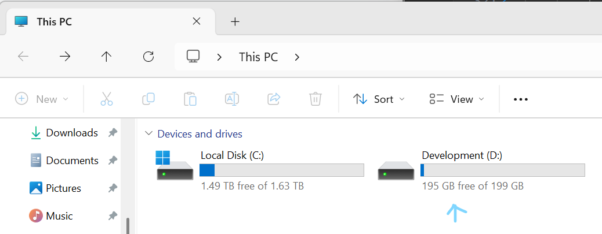
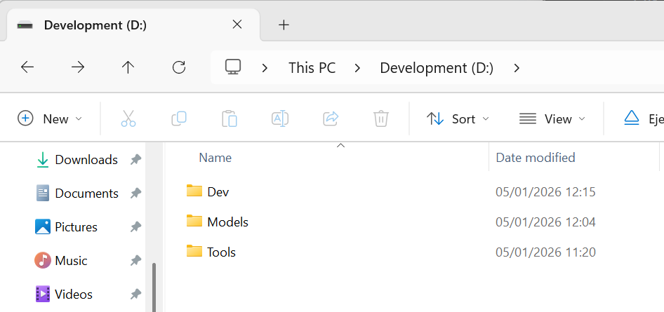
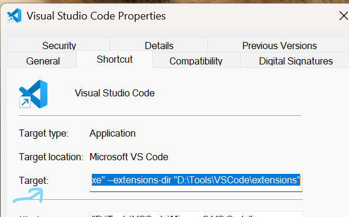
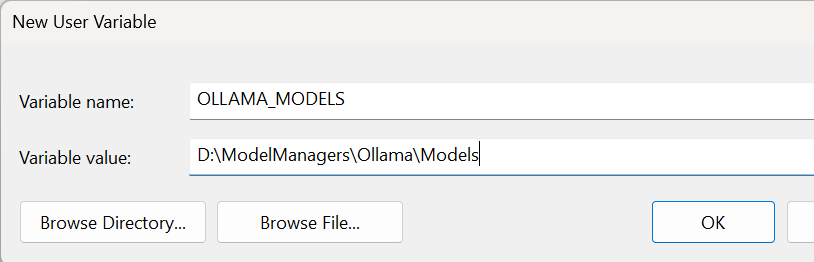
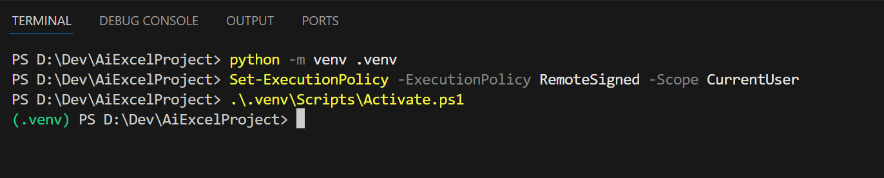
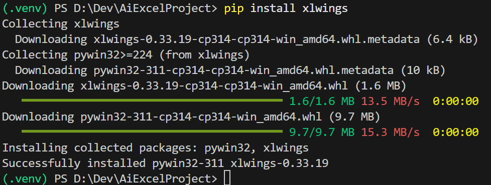
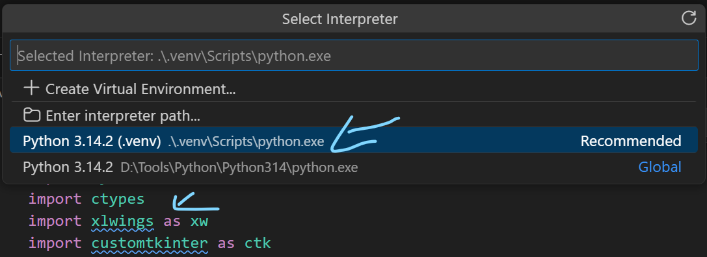
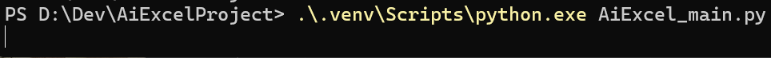
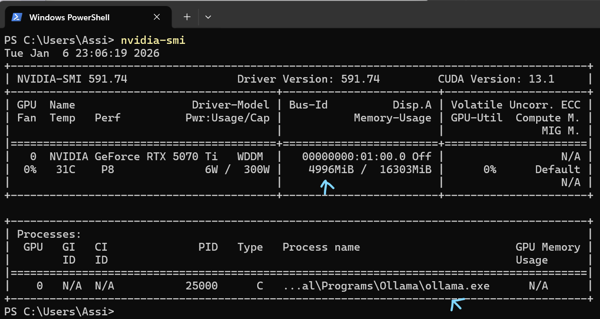

Dev Drive
- Create Dev Drive
System -> Storage,
click "Advanced storage settings",
click "Disks & volumes",
click "Create Dev Drive",
Choose "Create new VHD",
Name it "Development",
set the location to "C:\Volumes",
set size to 200,
choose "VHDX",
choose "Dynamically expending". - Verify that it is Trusted
Open Terminal as administrator,
type 'fsutil devdrv query D:",
you can see that Windows Defender Filter is treating this drive as trusted,
and now anything that is there will run faster.
- The new Disk
This Dev Drive is used for development, for all the code and tools (see below).

- Folders
This is the basic folders organization that i created there (for now).

Python
- Install Python
Choose the .exe file (not the .msix) so you can modify the drive letter,
(for example: python-3.14.2-amd64.exe),
mark "Add python.exe to PATH",
choose "Customize installation",
mark "Install Python 3.14 for all users",
mark "Precompile standard library",
set the path to "D:\Tools\Python\Python314".
Visual Studio Code
- Install Visual Studio Code
Choose the System installer so you can choose a drive,
(for example: VSCodeSetup-x64-1.107.1.exe),
mark "Create a desktop icon",
mark "Add open with code... " file and directory",
mark "Precompile standard library". - Install Extensions
- First create manually "D:\Tools\VSCode\Extensions" folder
- Right click on the VS Code shortcut on the desktop -> Properties, change "Target" to:
"D:\Tools\VSCode\Microsoft VS Code\Code.exe" --extensions-dir "D:\Tools\VSCode\extensions",
note that you added to the string that was already there the second part of extensions-dir,
note that the quotations should be there
- Inside VSCode go to "View -> Extensions",
search for "Code Spell Checker" and install it (to begin with) - Make sure the extension is under your DevDrive "D:\Tools\VSCode\extensions"
- Install "Python" extension,
note that "Pylance", "Python Debugger" and "Python Environments" are added automatically
- GitHub Copilot on Visual Studio Code
You can find it in "AI Training - Development Tools" page.
Git
- Git Repositories and GitHub
I already had them ready at this point, so it is not covered here,
you can find it in "AI Training - Development Tools" page. - Install Git
Install Git under D:\Tools\Git,
choose "Use Visual Studio Code as Git's default editor". - Signin
Open Terminal,
git config --global user.name "your git Name"
git config --global user.email "your email" - Clone
Open Terminal inside D:\Dev,
git clone https://github.com/yourName/YourProject.git
(now close and reopen VsCode).
Ollama
- Set Ollama to download models to our DevDrive
Prior to installation,
Go to "Edit the system environment variables" (search Windows start),
click "Environment Variables...",
click "New...",
set "Variable name:" to OLLAMA_MODELS
set "Variable value:" to D:\ModelManagers\Ollama\Models
and OK.
- Install Ollama
Download and install Ollama,
and don't forget to add it in Nvidia power mode (see above). - Downloading Models and running
You can find it in "AI Guide - Excel" page.
Python Virtual Environment
- Create Virtual environment
- Open Terminal inside VSCode with your project open (it will open at your project location)
- Type: python -m venv .venv
(.venv folder is created inside the project folder) - Type: Set-ExecutionPolicy -ExecutionPolicy RemoteSigned -Scope CurrentUser
- Type: .\.venv\Scripts\Activate.ps1
now you can see in the terminal that the line starts with green .venv
Python Packages
- Install Python packages
Open Terminal inside VSCode (with the green .venv).
- Type: pip install xlwings

- Type: pip install ollama
- Type: pip install customtkinter
- Type: pip install numpy
- Open Terminal in D:\Dev\AiExcelProject,
make sure you are in green .venv or activate it,
then type: pip freeze > requirements.txt
do it every time you add a new package to your project (helpful when moving to other computers).
- VSCode looks for the packages in the usual place and mark them as problems.
Search (Ctrl+Shift+P) for "Python: Select Interpreter",
choose the .venv one.
- Type: pip install xlwings
Running
- Terminal Run
You can run it from the Terminal (for a quick test).

- GPU memory
From the Terminal run: nvidia-smi
with application running - and running Ollama,
you can see that 4.9 GB of Ollama is loaded into the 16GB of the 5070 TU card.
- Run on CUDA only
This tells any app that runs on the computer, and looks for CUDA,
to use only the GPU card and not the CPU integrated GPU.
Close Ollama (and maybe VSCode) before you run it, and restart after.
[Environment]::SetEnvironmentVariable("CUDA_VISIBLE_DEVICES", "0", "User")
Note that you can also choose to do it for a specific app:
[Environment]::SetEnvironmentVariable("OLLAMA_CUDA_DEVICES", "0", "User")